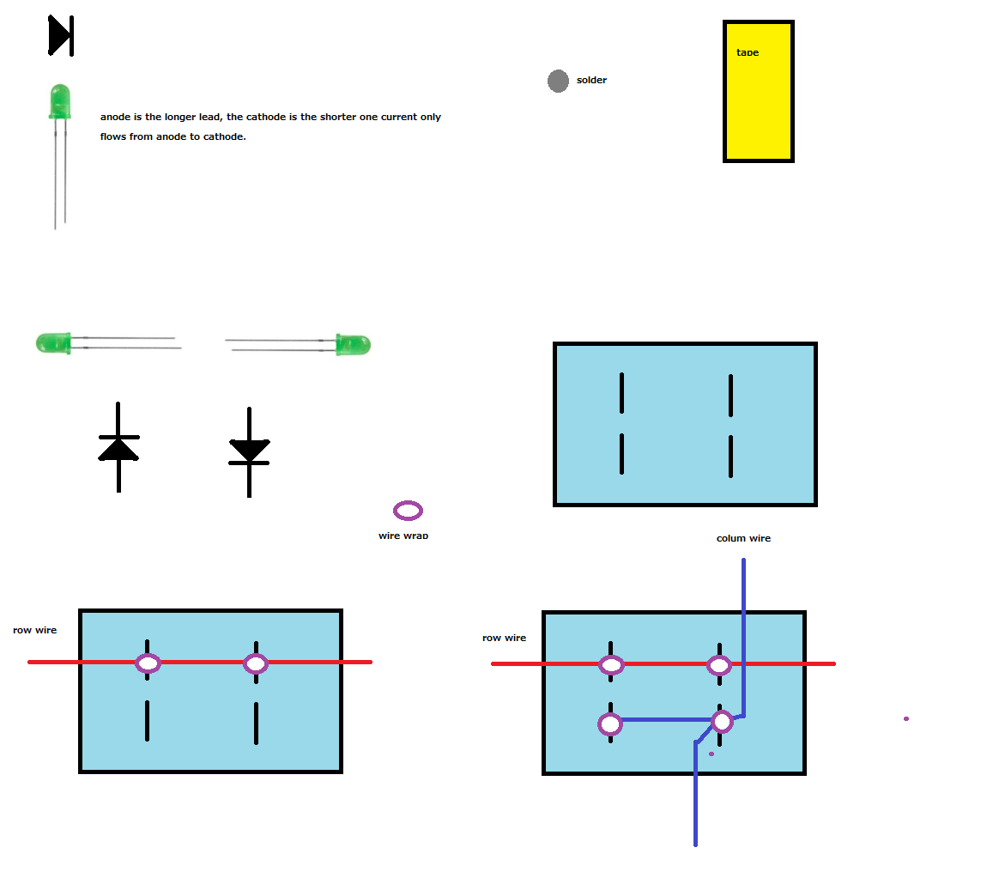

Arduino 8X11 LED Matrix Display(Uses Charlieplexing, which greatly increases the number of LEDs you can use, you can actually build a display with more than just 8X11, with an Arudino mega, you could control thousands of LEDs)
Copyright 2011 Usmar A Padow usmpadow@gmail.com
I recommend you also read the information on NerdKits - DIY Marquee LED Array Display which is what I based this project on and adapted it for the Arduino. It explains more in detail the workings of my project. I wrote the program for the Arduino from scratch. and I also moved the entire display wireing to the rear of the display, making it a more clean display. You can edit the fonts on my project by editing the program, all fonts are ASCII art. I would welcome if someone offers a better font made for my system. I also added voltage limiting resistors.
Download the Arduino sketches(software) from https://github.com/amigojapan/Arduino-LED-Matrix-Display/
Look at the chihiro.pde declarations for how to connect the wires of the display to the pins on the arudino, it is at the beginning of the file

Get a thick piece of paper, or a thin piece of cardboard, and cut it to the size you want. I spaced my LEDs 2cm from each other.
Mark with a ruler and pencil where you will cut the paper
Cut all the wholes with a cutter
Insert the LEDs, (Make sure you insert one opposite from the other, so that we can do charlieplexing, to understand this better read NerdKits - DIY Marquee LED Array Display
It is faster to take off the "skin" of a wire with a tool that looks like a scissor on the bottom
Use a wire wrapping tool(you can buy a cheap one at radio shack), wrap the wires for the rows
OK, this is how you wrap the wires for the rows and columns:
OK, now we have completed a 4X2 display.
This is the final circuit for the 4X2 display
Now, repeat the same process, but make an 8X11 Display, it is easier to use white paper(or cardboard) and then paint one side black(or whatever color you want) using spray paint.
This is the rear of the paper
Insert all the LEDs, don't forget to insert one LED opposite from the next LED on each row.
This is what the front part of the LED display should look like. It kind of looks complete now.
Here is the first wrapping for a row.
Wrap a whole row.
Wrap all the rows.
Close up of the row wrapping
Bend the LED leads in this way.(only the left side ones, the ones that have been wrapped for rows)
Here are all the rows bent
This is the first step to wrap a column
This is the second step to wrap a column
Close up of a row completed(black wire is columns, yellow wire is rows).Also bend the LED leads in the opposite direction from the other ones. make sure no metal is touching!
Here is the complete rear of the LED display
Close up.
Another close up.
Yet Another close up.
The formula for calculating what resistors you need for the LEDs you use is:
(ignore this line if it looks too hard)V_total - Vled_turn_on = R * I
on the Arduino the simplified formula is:
Resistor(ohms) = (5Volts - Voltage of the LED)/40milliAmpares
now just replace Voltage of the LED with the voltage of the LEDs you bought and you should be able to calculate the ohms of the resistors you need.
Note: the Voltage of LEDs varies by color, but if you really don't know the voltage of your LEDs, you may want to assume that the voltage is about 2.1V
Another useful website, if you dont want to calculate it manually is http://ledcalc.com, it is a bit technical
here is a picture of how I connected the resistors to the Arduino. the yellow (row) and black (column) wires go to the Arduino.